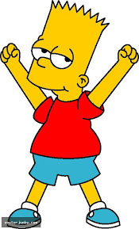

Bart
Bart é o filho mais velho travesso, rebelde, incompreendido, perturbador e "potencialmente perigoso". Ele é o único filho de Homer e Marge Simpson , e o irmão mais velho de Lisa e Maggie . Ele também foi apelidado de "Cosmo", depois de descobrir um cometa em "Bart's Comet". Bart também esteve na capa de vários quadrinhos, como "Critical Hit", "Simpsons Treasure Trove # 11" e "Winter Wingding". Bart também tem uma série de quadrinhos de 100 edições intitulada Simpson Comics Presents Bart Simpson. Bart é vagamente baseado em Matt Groening e seu irmão mais velho, Mark Groening.
Personalidade
Bart se comporta igual a uma criança imatura de 10 anos e sempre desobedece os seus pais. Sua desobediência faz com que coloque risco na vida das pessoas, especialmente na de sua irmão Lisa Simpson, a quem Bart está sempre em desacordo.
Bart odeia estudar e considera que o aprendizado é chato. Bart sempre causa problemas na Escola Elementar de Springfield e sempre pertuba e incomoda o Diretor Skinner, fazendo que Bart Simpson fique na detenção.
Sua imaturidade muitas vezes leva Homer Simpson estrangular o Bart Simpson e também fazer Bart Simpson brigar com sua irmã Lisa Simpson. Muitas vezes seu melhor amigo Milhouse acompanha Bart Simpson em suas confusões, embora ele recusa fazer isso algumas vezes para não sobrar para ele.
Bart sempre chama seu pai Homer Simpson de Homer SImpson em vez de pai, o que leva algumas vezes Homer estrangular o Bart. Bart muitas vezes se diverte com seu pai Homer Simpson, embora algumas vezes só faz isso para conseguir o que quer, mas muitas vezes Homer já saiba disso.